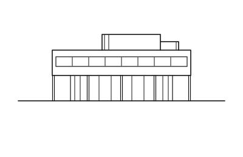

Buildings 321
Sort
 Rietveld Schröder House1924 · Utrecht
Rietveld Schröder House1924 · Utrecht Gropius House1938 · Lincoln
Gropius House1938 · Lincoln Eames House1949 · Los Angeles
Eames House1949 · Los Angeles Taliesin West1937 · Scottsdale
Taliesin West1937 · Scottsdale Lovell Health House1929 · Los Angeles
Lovell Health House1929 · Los Angeles Palau Güell1890 · Barcelona
Palau Güell1890 · Barcelona Vanna Venturi House1964 · Philadelphia
Vanna Venturi House1964 · Philadelphia Muuratsalo Experimental House1953 · Jyväskylä
Muuratsalo Experimental House1953 · Jyväskylä Lemke House1933 · Berlin
Lemke House1933 · Berlin Sheats-Goldstein Residence1963 · Los Angeles
Sheats-Goldstein Residence1963 · Los Angeles Autrique House1893 · Brussels
Autrique House1893 · Brussels Villa Tugendhat1930 · Brno
Villa Tugendhat1930 · Brno Glass House1949 · New Canaan
Glass House1949 · New Canaan Villa La Rotonda1592 · Vicenza
Villa La Rotonda1592 · Vicenza Casa Luis Barragán1948 · Mexico City
Casa Luis Barragán1948 · Mexico City Darwin D. Martin House1905 · Buffalo
Darwin D. Martin House1905 · Buffalo Horta House1901 · Brussels
Horta House1901 · Brussels Gehry Residence1978 · Santa Monica
Gehry Residence1978 · Santa Monica Hôtel van Eetvelde1898 · Brussels
Hôtel van Eetvelde1898 · Brussels Maison Louis Carré1959 · Bazoches-sur-Guyonne
Maison Louis Carré1959 · Bazoches-sur-Guyonne House for an Art Lover1996 · Glasgow
House for an Art Lover1996 · Glasgow Kentuck Knob1956 · Chalk Hill
Kentuck Knob1956 · Chalk Hill Jachthuis Sint Hubertus1920 · Otterlo
Jachthuis Sint Hubertus1920 · Otterlo Fallingwater1939 · Mill Run
Fallingwater1939 · Mill Run Melnikov House1929 · Moscow
Melnikov House1929 · Moscow Schindler House1922 · West Hollywood
Schindler House1922 · West Hollywood Stoclet Palace1911 · Brussels
Stoclet Palace1911 · Brussels Hill House1904 · Helensburgh
Hill House1904 · Helensburgh
Villa Savoye1931 · Poissy Rockefeller Guest House1950 · New York
Rockefeller Guest House1950 · New York Curutchet House1953 · La Plata
Curutchet House1953 · La Plata Rose Seidler House1950 · Wahroonga
Rose Seidler House1950 · Wahroonga Katsura Imperial Villa17th c. · Kyoto
Katsura Imperial Villa17th c. · Kyoto Herbert and Katherine Jacobs First House1937 · Madison
Herbert and Katherine Jacobs First House1937 · Madison Cauchie House1905 · Brussels
Cauchie House1905 · Brussels Farnsworth House1951 · Plano
Farnsworth House1951 · Plano Robie House1910 · Chicago
Robie House1910 · Chicago El Capricho1885 · Comillas
El Capricho1885 · Comillas Villa Mairea1939 · Noormarkku
Villa Mairea1939 · Noormarkku Hollyhock House1921 · Los Angeles
Hollyhock House1921 · Los Angeles Milam Residence1961 · Ponte Vedra Beach
Milam Residence1961 · Ponte Vedra Beach Miller House and Garden1957 · Columbus
Miller House and Garden1957 · Columbus Hôtel Tassel1894 · Brussels
Hôtel Tassel1894 · Brussels Chemosphere (Malin Residence)1960 · Los Angeles
Chemosphere (Malin Residence)1960 · Los Angeles 2 Willow Road1939 · London
2 Willow Road1939 · London Kaufmann Desert House1946 · Palm Springs
Kaufmann Desert House1946 · Palm Springs Red House1860 · London
Red House1860 · London Lovell Beach House1926 · Newport Beach
Lovell Beach House1926 · Newport Beach